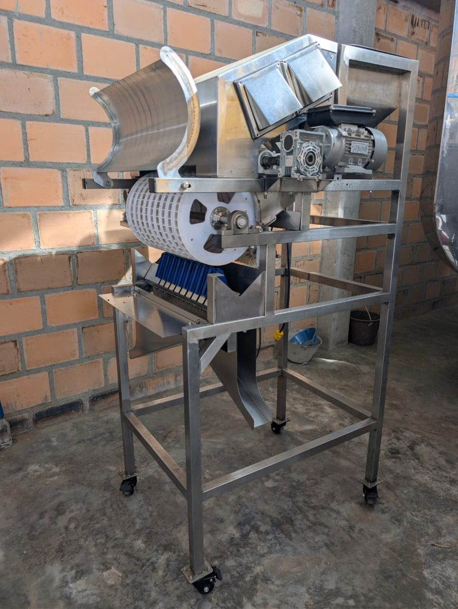

NC2024/0009441
PATENTEPATENTE – MÁQUINA MODULAR PARA CLASIFICACIÓN DE GRANOS DE CAFÉ
MÁQUINA MODULAR, CÍCLICA Y ROTATORIA PARA SELECCIÓN Y CLASIFICACIÓN ÓPTICA DE FRUTOS DE CAFÉ
- Inventor
- Yilver Alexis Cruz Ortiz
- Sector
- Ingeniería Mecánica
- Contacto
- 📞 3186542465